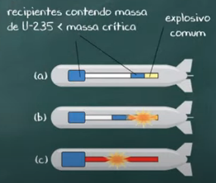

O bombardeio ocorreu pouco tempo antes o final da segunda guerra mundial, ocorreu depois do ato de ataque japoneses as bases dos Estados Unido, o que ocasionou na Guerra da Ásia, no qual o Japão não queria o domínio dos EUA (que possuía bases militares nas Filipinas) sobre seu território, então o Japão iniciou um ataque para domínio de terras asiáticas, e saiu vitorioso em várias delas, até a Batalha de Midway, que foi o ponto aonde as vitórias japonesas se transformaram em derrotas.
A Batalha de Midway foi decisiva pois danificou muito a marinha imperial de forma irreversível, e por esse fato em 1945 foi declarada a derrota do Japão por suas péssimas condições, tanto de vida, pois a fome “reinava” no país, além do fato de ele estar completamente cercado.
Após a visível derrota do Japão os Estados Unidos e seus aliados passaram a planejar a invasão do território japonês. Mas havia um problema nisso, pois o Japão estabelecia diversas resistências, foi quando os Estados Unidos perceberam que para dominar o território japonês muitos soldados estadunidenses morreriam nessa batalha.
Assim, na Conferência de Potsdam, os Estados Unidos apresentaram o projeto da bomba atômica e sua ideia de usá-lo contra o Japão. E nesta mesma conferência foi declarado os termos de rendição japonesa, conhecidos como Declaração de Potsdam.
Com a negativa japonesa em se render, os americanos optaram por utilizar a bomba atômica, na cidade japonesa de Hiroshima. O ataque ocorreu no dia 6 de agosto de 1945 e foi realizado pelo bombardeiro B-29 chamado “Enola Gay”. O avião foi pilotado por Paul Tibbets.
A bomba explodiu a mais ou menos 580 metros de altura e originou um pequeno sol, que espalhou um clarão pela cidade e uma onda de energia e calor que foi responsável pela destruição material quase completa da cidade de Hiroshima, além de resultar em 80 mil vítimas imediatas.
Durante 3 dias ocorreram incêndios na cidade ocasionados pelo calor. Aproximadamente 60% da cidade foi destruída e 140 mil pessoas morreram nesse primeiro ataque.
Mesmo com os impactos materiais, humanos e psicológicos causados por um ataque que chocou o mundo, o Japão decidiu não se render. Contudo, três dias depois do primeiro ataque, em 9 de outubro, os EUA lançaram uma segunda bomba.
O alvo inicial era a cidade de Kokura, com um terreno plano, porém a neblina impossibilitou que Charles Sweeney, piloto do bombardeiro B-29 (mesmo modelo do utilizado em Hiroshima), conseguisse lançar a bomba.
Assim, ele seguiu rumo a cidade de Nagasaki carregando a Fat Man (Bomba de Nagasaki), bomba com um poder de destruição ainda maior que a anterior, feita de plutônio 239. A bomba explodiu a 500 metros do solo.
A força da explosão da Fat Man foi maior, porém as características geográficas de Nagasaki diminuíram a área de destruição, pois há dois vales entre a cidade. Ainda assim, 40% da cidade foi destruída.
Cinco dias após o segundo ataque, os japoneses declararam sua rendição no dia 14 de agosto de 1945. O acordo foi assinado no dia 2 de setembro, no navio americano USS Missouri, na Baía de Tóquio.

No Estágio “a” podemos ver o explosivo comum, que irá impulsionar o compartimento menor de massa subcrítica ao compartimento maior de massa crítica (estágios “b” e “c”).
No centro de uma explosão nuclear, a temperatura pode chegar a incríveis milhões de graus celcius
A luminosidade produzida pode cegar a quilometros de distância.
Ápós a explosão, um vento fortíssimo começa a soprar, trazendo um calor quarenta vezes mais sufocante que um dia sufocante de verão.
A onda de choque gera ventos que chegam à velocidade de mais de 1500 km/h (cinco vezes mais potente que os mais fortes furacões).
Em 1945 o mundo presenciou nos dias seis e nove de agosto as explosões nucleares em Hiroshima e Nagasaki, no Japão
Os sobreviventes relataram do horror que presenciaram durante todo o caos, após as bombas serem lançadas, pessoas mortas e feridas se espalhavam por toda parte.
Há imensos relatos de efeitos que as bombas causaram sob as pessoas do local, tais quais como o caso da senhora Ayoma, que segundo a afirmação de Charles Pellegrino foi a pessoa mais próxima a entrar em contato com a explosão, sendo assim; tendo seu corpo instantemente vaporizado pela explosão da mesma. E também o relato de outras vítimas que tiveram sua sombra impressa em paredes de locais que permaneceram em pé. Outro efeito causado sobre pessoas do local foi as queimaduras causadas pela nuvem de calor que se espalhou pela cidade, causando queimaduras incuráveis (por conta da radiação) nos sobreviventes.